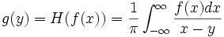
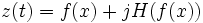

Diese Funktion berechnet die Hilbert-Transformation und/oder das analytische Signal, das der Eingabe entspricht.
Es wird angenommen, dass f(ix) das Eingabesignal ist und H(?/span>) den Operator der Hilbert-Transformation bezeichnet. Die Hilbert-Transformation von f(ix) (unten bezeichnet mit g(y)) kann folgendermaßen definiert werden:

Das Ergebnis ist tatsächlich eine um eine 90-Grad-Phase verschobene Version der Eingabedaten, wie im Diagramm unten zu sehen.
Diese Funktion kann auch das analytische Signal entsprechend der Eingabedaten berechnen. Ein analytisches Signal ist ein Signal, das keine negative Frequenzkomponente besitzt. Es wird angenommen, dass z(t) das analytische Signal bezeichnet, d.h., wir haben:
